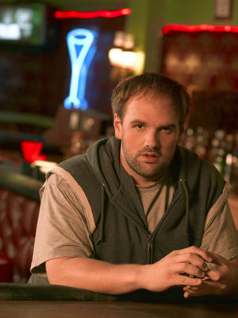

Randy Hickey
 De: La Frikipedia, la enciclopedia extremadamente seria.
De: La Frikipedia, la enciclopedia extremadamente seria.
 Randy en su pose más intelectual...
Es el hermano del hijo de dios (Si, dios con minúscula) en su segundo aterrizaje en la tierra con forma corpórea... Es algo mas listo que "El Luisma", debido a que solo es un niño grande borracho, no ex drogadicto... Como Palestina en estos tiempos es un sitio muy conflictivo, a dios (Si, dios con minuscula) no se le ocurrio mejor cosa que enviar a su hijo a otro lugar, el cual coincide misteriosamente con el lugar de procedencia de los ingeniosos guionistas de la Fox, capitaneados por un enviado de dios (Sí, dios con minuscula) mas elevado llamado Greg Garcia, etereo y sin forma corporea definida. Por lo general se puede decir que es un tío inútil pero simpático que pasa horas muertas en el lugar favorito de borrachos, prostitutas de día, viejos, ex presidiarios y ladrones comunes del condado de Candem: La taberna del Cangrejo.
Una de las cosas que lo caracterizan es que dice lo que piensa aun sin pensarlo (¿?), tener lapsus mentales cíclicos que se convierten en un bucle infinito, y ser feliz con cosas tan simples que no podrían satisfacer ni a "El Luisma". Sí, se puede decir que la simplicidad es algo que define a la perfección a Randy. Se dice que una vez paso dos minutos enteros pensando, contradiccion a todas las leyes fisicas y de todo tipo existentes, lo cual produjo una reaccion en cadena
Es la mano derecha de su hermano Earl (El grande, el inigualable, el hijo del Karma, el hombre lista) a quien ayuda siempre que puede a tachar nombres de su lista. Esta es la misión por la que Randy ha sido enviado a este truño de planeta. Tiene treinta tacos y no se ha ganado las lentejas en su vida, y ahora con más razón, pues puede vivir a costa de la fortuna que ha ganado su hermano con un bono de lotería obtenido en circunstancias poco comunes. Entre otras cosas, se dedica a beber, robar, ayudar a Earl con su lista, intentar ligar con Catalina, sacar cosas de la máquina de la taberna del Cangrejo, mirar cómo las ratas copulan con la rana Gustavo (no literalmente), jugar al salto de moto por encima de la cabeza y no menos importante, holgazanear (ni que decir tiene que los hermanos Hickey nunca han destacado por ser grandes atletas).
¿Qué le hace grande?
(Aparte de su tamaño)
Cualquiera que tenga dos dedos de frente es capaz de valorar sus grandes acciones-frases-cosas como por ejemplo:
- Randy a Earl al ver a Catalina:
- Me la pido!
- Randy en una fiesta despues de aspirar un globo de NO helio:
- Somos los caramelosssss mas cabezonesssssssss el chupa-chups!!!
- Hombre-Cangrejo: ¡Randy!¡No es un globo de helio!
- Randy en la cama junto Earl:
- R: Earl, ¿tu crees que a los monos les preocupa su aspecto?
- E: Pues no lo se, pero si les importara se pondrían pantalones.
- Randy en la cama junto Earl:
- R: ¿Las avestruces pueden llegar hasta aqui?
- E: Por poder... pero es muy dificil que habran la puerta...
- Randy sufriendo los efectos de ser alergico a los gatos
- Creo que soy alergico a lo que dios utiliza para hacerlos...
- Randy intentando atrapar la rata de la maquina de pinzas del bar
- ¡Se lo que hago!¡Me acercare sigilosamente mientras se aparea con coco!
- Randy:¡ARGHHHHHHHHHHH!¡Una gallina!¡Me da asco esa cosa que tienen colgando del cuello!
- - ¡Mira Kenny! Estoy haciendo como que duermo encima del teclado y el ordenador está haciendo zetas como si estuviera frito.
Su esposa

|
CUIDADÍNEste artículo o sección contiene alerones feos. O sea
SPOILERS.
|
Antes de que te empieces ha replantearte la vida por ver lo injusta que es la vida, primero recuerda que es una serie... y que no es real... y lo segundo y mas importante... es que están casados por interés... (El espoiler es que se casa con Catalina)
Algunos Datos de Catalina:
- Catalina es una striper inmigrante mexicana.
- Esta buena.
- Se la pidió Randy.
- también trabaja en el motel en que viven los 2 hermanos.
- Teme a los violadores.
- No teme a las aves.
- Esta buena.
¿Sabias que...
- ...Le gusta jugar a la elección correcta.
- ...Esta en la lista de su hermano.
- ...Odia las aves.
- ...Las odia por que las teme.
- Le da miedo el sombrero del Papa por que se cree que debajo hay un Pollo.
- Le dio por el rollo skinhead, pero tanto dios (Si, con minuscula) como su enviado en la tierra principal quitando Greg Garcia, su hermano Earl, censuraron este comportamiento y le recondujeron por el buen camino.
- ...Es el hermano de Earl (¿A que no lo sabíais?).
- ...Es un skinhead en la película American History X
- ...Le estafaron con la cubertería de plata.
- ...Le gusta la serie Cops (Sale en un capitulo).
- ...Es amigo de la tortuga del Hombre-Cangrejo.
- ...Nunca entenderá la lista de Earl.
- ...Siempre ha querido ir a los San Fermines en Pamplona.
- ...Domina el arte del graffiti.
- ...Randy y McLovin son intimos amigos. De hecho él le recomendo la nacionalidad hawaiana.
- ...A Randy le hizo gracia este chiste: ¿Qué es un bumerán que no vuelve? Un palo.
- ...Se tiró a una gotica en El efecto mariposa.
- ...Detesta las comidas y bebidas con cigarrillos
- ...Ha visto al gigante más pequeño del mundo y al enano más grande del mundo.
- ...Existe un alter ego suyo y de su hermano en una dimensión paralela en México Lindo.
- ...Nunca ha hecho un touchdown.
- ...Cuando juega con su hermano a los caraduras él siempre es hombre de nieve, y Earl nunca le deja pedirse a bandido.
- ...Necesita EXACTAMENTE 4 cervezas para poder mentir bien y 9 para resultados completamente impredecibles en su comportamiento.
- ...Es mejor hijo que Earl, siempre que hablemos de sus tutores terrícolas.
- ...NO cree en el Karma.
- ...No está hecho a imagen y semejanza a dios (Sí, con minúscula). De hecho, lo creó así para no crear ostentación y lujos innecesarios.
- ...Una vez Earl le encomendó realizar los más duros trabajos de su lista, pero se dio cuenta de que solo él estaba preparado para tan ardua tarea.
- ...Randy todavía pretende superar la puntuación de Darnel (A.K.A. El Hombre Cangrejo) en el Space Invaders. Por supuesto, es una meta inalcanzable.
Mascotas de Randy
- El señor pez (R.I.P.)
- Tiene una mascota imaginaria que se llama Mordisquitos
- Un ratón que pulula por la habitación del hotel es su amigo. Le cae bien.
- Jamás tendría un ave por mascota-
- Es amigo de la tortuga del hombre cangrejo-
- Earl no confía en su capacidad de mantener a animales de compañia con vida.-
Autor(es):
- Alex2610
- Khazike Khashondo
- Azulejos
- Nadaquever
- Kalimero
- -MaRiO-
- Lljosemll
- Veni Vidi Vici
- Harry El del Pote
Frikipedia 2005-2016, Licencia
GFDL 1.2 - Extraído por FrikiLeaks